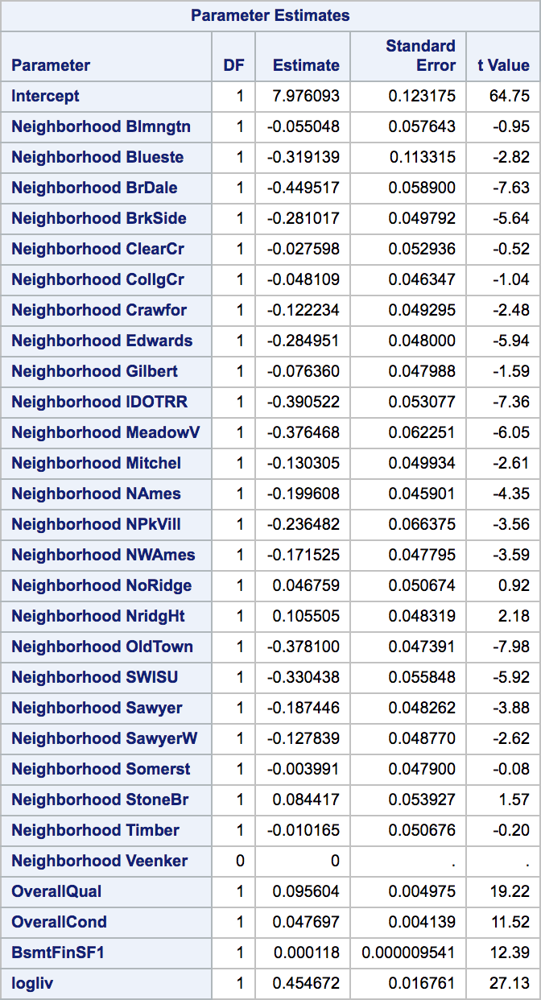

Ameing for the Stars: Predicing Home Value in Ames, Iowa
A Kaggle Project by Team Fat Tails
Authors: Quinton Nixon, Grant Bourzikas, Brock Friedrich
Date: Aug. 12, 2018
Introduction
Ask a home buyer to describe their dream house, and they probably won't begin with the height of the basement ceiling or the proximity to an east-west railroad. However, it is essential to review the data because it proves that there are many other influences in price negotiations than the number of bedrooms or a white-picket fence.
Data Synopsis
The Ames House dataset was compiled by Dean De Cock and contains 79 explanatory variables describing almost every aspect of residual home in Ames Iowa from 2006 to 2010. The data set contains 2930 observations involved in assessing home values.
Data summary for North Ames, Edwards, and Brookside neighborhoods:
| Variable | N | N Miss | Minimum | Maximum | Mean | Median | Quartile Range |
|---|---|---|---|---|---|---|---|
| Id | 383 | 0 | 10 | 1460 | 744 | 729 | 744 |
| MSSubClass | 383 | 0 | 20 | 190 | 45 | 30 | 40 |
| GrLivArea | 383 | 0 | 334 | 5642 | 1302 | 1200 | 503 |
| SalePrice | 383 | 0 | 39300 | 345000 | 138063 | 135500 | 39000 |
| logSalePrice | 383 | 0 | 11 | 13 | 12 | 12 | 0 |
| logGrLivArea | 383 | 0 | 6 | 9 | 7 | 7 | 0 |
| No Transformation | Log Transformation |
|---|---|
 |
 |
Analysis Question 1
Restatement of Problem
Century 21 has commissioned Nixon, Friedrich, and Bourzikas to perform a study to derive insights regarding homes prices in Ames. Century focuses on three neighborhoods in Ames: “North Ames”, “Edwards”, and “Brookside”. They would like to get an estimate of how the Sales Price of the house is related to the square footage of the living area of the house. Additionally, they would like to understand the relationship between sales price and the living area square footage, as well as investigating any relationship between sales price and that home’s neighborhood.
Build and Fit the Model
In order to build and fit a model, an analysis must be performed to identify features of the dataset that are statistically significant in their relation to, and prediction of, the sales price.
When one of the predictor variables impacts how another predictor variable is related to the dependent variable. A multiple linear regression model in which the mean of the LogLivingArea depends linearly on the important of the LogSalesPrice and all three Neighborhoods, allowing for different slopes and intercepts, is as follow:
In Assessing the Fit, the coefficient is interpreted by the following models utilizing the base formula:
• Ames^SalesPrice = β0 + β1BrkSide + β1Edwards + β3:NAmes + β4 (LogLivingAreaBrkSide) + β5(LogLivingArea*Edwards)
o β0: The intercept in this model provides an estimate 8.49 of the logGrLivArwea (reference NAmes) with a logGrLivArwea of zero. Of course, this is extrapolation and does not have a clear, practical meaning.
o β1: This is the adjustment of the intercept for a Neighborhood BrkSide with respect to a NAmes Neighborhood. For a Living room of zero, the Neighborhood BrkSide has an estimated Sale Price Increases of -5. 16 (2^-2.58 back transformation) dollars per square foot less than the NAmes Livingroom.
o β1 This is the adjustment of the intercept for a Neighborhood Edwards with respect to a NAmes Neighborhood. For a Living room of zero, the Neighborhood Edwards has an estimated Sale Price Increases of -1.40 (2^-0.49 back transformation) dollars per square foot less than the NAmes Livingroom.
o β3: For each 1 unit increase in the Living Room of a NAmes, the estimated Sale Price increases 2^0.47 units
o β4: For each 1 unit increase in the Living Room Size of BrkSide, the estimated Sale Price increases 8.16 (2^0.35 Back transformed) dollars per square foot from the change with the NAmes.
o β5: For each 1 unit increase in the Living Room Size of Edwards, the estimated Sale Price increases 1.04 (2^0.05 Back transformed) dollars per square foot from the change with the NAmes.
Assumptions
In reviewing the data, an analysis was performed using QQ Plots and Histograms, the linearity of the data is not in question due to the sample size, the data is right skewed and is not normally distributed as depicted, the data does not have equal standard deviations, and the data is independent of each other.
Because the assumptions in the data do not support evidence that will allow the study to continue due to data, transformation of the data was perfromed using the Log of the Sales Price and Log of the Grang Living Area. Upon this transforamtion, the linearity of the data is not in question, that is not strong evidence against normalizty of residuals looking at the histogram and QQ plot, the standard deviasion appear to be equel, and the data is indpependent. Addtionaly, there is a constant variance after the trasnformation occurred.
Additionaly, the it is assumped that the data is independent due to each house being unique to each neighnborhood.
After the transformation, the data was interrogated and a review of the studentized residuals and Cooks D was performed by running a fit diagnostic through our Proc Reg code. The review of Studentized residual identified one outliers that was related to a very large grand living room square footage and two outliers were related homes that have Sales price over 700,000 representing less than 0.13%. While these data points are low leverage with big residuals, Cooks D only show a mile problem. Due to the sample size, the Homes remained in the data set because these do not appear to affect the data.
Collinearity
Additionally, there is no collinearity in the data because Neighborhood and Grand Living are correlated with the Sales Price, if using differently each neighborhood variable as independent data. Since these variables are correlated with each other and the response variables, it is not difficult to parse out how each will impact the response variable independently.
R2
With only an .421 and an adjusted of .418, the fit of of the model of predicting sales price by Nieghborhood and Grand Living Room square foot, is not a good model. It is recommended that additianla variables should be used to calculate a more accute Sales Price.
Model Comparison
After reviewing the models after and before the transformation, the R-Squared is (0.51, 0.45, respectively) with a RMSE of (0.19, 28552.30, respectively) and a Coefficient Variance of (1.63, 20.68, respectively) ensuring the better fit is with the transformed data.
No Interactions
| Number of Observations Used | 383 |
|---|
| R-Square | Coeff Var | Root MSE | logSalePrice Mean |
|---|---|---|---|
| 0.489705 | 1.66218 | 0.196118 | 11.79887 |
| Parameter | Estimate | Standard Error | t Value | Pr > t | LCL | UCL |
|---|---|---|---|---|---|---|
| Intercept | 7.90214954 | 0.23133976 | 34.16 | <.0001 | 7.447279361 | 8.357019719 |
| logGrLivArea | 0.555788385 | 0.03236859 | 17.17 | <.0001 | 0.492143867 | 0.619432902 |
| Neighborhood BrkSide | -0.132788629 | 0.02906111 | -4.57 | <.0001 | -0.189929827 | -0.075647431 |
| Neighborhood Edwards | -0.153226231 | 0.02357095 | -6.5 | <.0001 | -0.199572446 | -0.106880015 |
| Neighborhood NAmes | 0 | . | . | . | . | . |

With Interactions
| Number of Observations Used | 383 |
|---|
| R-Square | Coeff Var | Root MSE | logSalePrice Mean |
|---|---|---|---|
| 0.512092 | 1.629617 | 0.192276 | 11.79887 |
| Parameter | Estimate | Standard Error | t Value | Pr > t | LCL | UCL |
|---|---|---|---|---|---|---|
| Intercept | 8.492727641 | 0.32441709 | 26.18 | <.0001 | 7.854833978 | 9.130621305 |
| logGrLivArea | 0.473023602 | 0.04542895 | 10.41 | <.0001 | 0.383697733 | 0.562349471 |
| Neighborhood BrkSide | -2.579806905 | 0.59988132 | -4.3 | <.0001 | -3.759339383 | -1.400274428 |
| Neighborhood Edwards | -0.486220461 | 0.51750833 | -0.94 | 0.3481 | -1.503784863 | 0.531343941 |
| Neighborhood NAmes | 0 | . | . | . | . | . |
| logGrLivA*Neighborho BrkSide | 0.346624454 | 0.08482008 | 4.09 | <.0001 | 0.179844737 | 0.513404171 |
| logGrLivA*Neighborho Edwards | 0.046643642 | 0.07248011 | 0.64 | 0.5203 | -0.09587228 | 0.189159563 |
| logGrLivA*Neighborho NAmes | 0 | . | . | . | . | . |

Parameters & Equations
General Formula:
Conclusion
To interpret the model, a change in Living Room Square Feet Is a 2x increase. For the neighborhood with approximately the same mass, it is estimate that a 2-fold increase in the Living Area Square feet is associated with a () which is a 38.8% increase in the median Sales Price of the neighborhood. (P value < 0.001). At a 95% confidence intervals for the increase in sales price of (e^{0.38}, e^{0.56}) = (1.3, 1.48) which equates to an estimated increase between 30.5% and 47.7%.
Doubling the living area space multiplies the predicted median sales price of North Ames homes by . In other words, the sales price increases by 38% for every doubling of square footage in the general living space.
| LivingArea | |||
|---|---|---|---|
| estimate | 0.47 | 0.38 | 0.56 |
| change | 1.39 | 1.30 | 1.48 |
| % change | 38.80 | 30.47 | 47.67 |
Analysis Question 2
Restate Problem
Our objective is to build the most predictive model for sale prices of homes in Ames, Iowa using only the tools learned through week 14 of MSDS 6371. We are to produce and compare four models: forward selection, backward elimination, stepwise selection, and a custom model. Models are to be evaluated on adjusted R^2, CV PRESS, and Kaggle score. We want the model that does the best job predicting future prices (that is, best Kaggle score wins).
Model Selection
Backward elimination, forward selection, stepwise selection, and custom models were built for this question. All models were built using log-log transformed data (log of SalePrice and log of GrLivArea). Forward selection and stepwise selection had comparable Kaggle scores. Based on interpretability, the Forward Selection Model was chosen.
Check Assumptions
Based on the lack of overwhelming evidence to support the assumptions, a number of transformations were considered and a decision was made to use a log-log transformation as the basis of the most predictive model.
-
Linearity
We know from the previous question that SalePrice is linearly correlated with some of the explanatory variables (size, for example), but it is unlikely to be correlated with all of them. -
Heteroscedacity
There is some visual evidence against constant variance. With the large number of observations, visual inspection becomes more challenging. -
Normality
A histogram of saleprice across all neighborhoods shows evidence of right skewness. -
Independence
Although, homeowners are free to price their homes as they wish and buyers can make whatever offer they choose, there is no way to say with much certainty that home prices are truly independent. -
Residual Diagnostics
-
Outlier Analysis
Two observations had CooksD values significantly higher than other observations.
And no observations appeared to be particularly high leverage so we can proceed without the need to removing any observations prior to modelling.
Comparing Competing Models
| Predictive Models | Adjusted R2 | CV PRESS | Kaggle Score |
|---|---|---|---|
| Forward | .8501 | 31.18449 | .14880 |
| Backward | .9350 | 31.67571 | .21225 |
| Stepwise | .9206 | 19.14915 | .14880 |
| CUSTOM | .9351 | 31.84610 | .21261 |
Best model: Forward selection
The “best” model in this situation is one that has a high degree of predictable power and is easy to interpret. That model is the forward selection model.
At five explanatory variables, the forward selection model is relatively small. It includes coefficients for OverallCond, OverallQual, BsmtFinSF1, Neighborhood and logliv. In other words, it predicts that the price of a home is a function of its location, size, and overall condition.
Each neighborhood has a coefficient that acts as a multiplier for a % increase or decrease in the mean SalePrice relative to the Veenker Neighborhood (reference level selected by SAS).
The equation for this model is the following:
Conclusion
What this means in real world terms is that a 10% increase in the above ground living area should result in an ~4.4% increase in price () due to log transforming the SalePrice and the GrLivArea variable.
The selection of Neighborhood impacts the mean selling price by the relative percentage of . The mean price for Neighborhoods with negative coefficients goes down relative to the Veenker reference neighborhood.
For each unit increase in the OverallQual score, the mean selling price will increase by approx. 10% ().
For each unit increase in OverallCond score, the mean selling price will increase by approx. 4.9% ().
For each unit increase in BsmtFinSF1, the mean selling price will increase by approx. 0.0012% ().
Visually we can see that (GrLivArea) is the strongest predictor of price followed by OverallQual. This makes sense conceptually. It’s reasonable to assume people will pay more for a big, nice home.

Appendix A
SAS Program
main.sas
%INCLUDE '/home/bfriedrich0/sasuser.v94/kaggle/prod/dataimport.sas'; %INCLUDE '/home/bfriedrich0/sasuser.v94/kaggle/prod/procmeans.sas'; %INCLUDE '/home/bfriedrich0/sasuser.v94/kaggle/prod/analysis1_matrixscatterplots.sas'; %INCLUDE '/home/bfriedrich0/sasuser.v94/kaggle/prod/analysis1_model_interactions.sas'; %INCLUDE '/home/bfriedrich0/sasuser.v94/kaggle/prod/analysis1_model_nointeractions.sas'; %INCLUDE '/home/bfriedrich0/sasuser.v94/kaggle/prod/analysis2_backward.sas'; %INCLUDE '/home/bfriedrich0/sasuser.v94/kaggle/prod/analysis2_forward.sas'; %INCLUDE '/home/bfriedrich0/sasuser.v94/kaggle/prod/analysis2_stepwise.sas'; %INCLUDE '/home/bfriedrich0/sasuser.v94/kaggle/prod/analysis2_custom.sas';
dataimport.sas
/* Import training dataset from kaggle */ proc import datafile="/home/bfriedrich0/sasuser.v94/kaggle/data/train.csv" out=train_original dbms=csv replace; getnames=yes; run; /* Import testing dataset from kaggle */ proc import datafile="/home/bfriedrich0/sasuser.v94/kaggle/data/test.csv" out=test_original dbms=csv replace; getnames=yes; run; /* Combine test and train datasets and fix column names */ data combined_original; set train_original test_original; rename '1stFlrSF'n = FirstFlrSF '2ndFlrSF'n = SecondFlrSF '3SsnPorch'n = ThreeSsnPorch; run; /* train dataset unfiltered with added calculation columns */ data train_cleansed_calcs; set train_original; logSalePrice = log(SalePrice); /* natural log of SalePrice */ logGrLivArea = log(GrLivArea); /* natural log of GrLivArea */ logliv = log(GrLivArea); logprice = log(SalePrice); total_area = GrLivArea + GarageArea + TotalBsmtSF; remodel_age = 2018 - YearRemodAd; run; /* train dataset with ALL variables and ALL neighborhoods */ data train_cleansed_vall_nall; set train_cleansed_calcs; run; /* train dataset with ALL variables and TARGET neighborhoods */ data train_cleansed_vall_ntarget; set train_cleansed_calcs; where Neighborhood = 'NAmes' /* North Ames */ or Neighborhood = 'Edwards' /* Edwards */ or Neighborhood = 'BrkSide'; /* Brookside */ run; /* train dataset with TARGET variables and ALL neighborhoods */ data train_cleansed_vtarget_nall; set train_cleansed_calcs(keep= Id MSSubClass SalePrice GrLivArea logSalePrice logGrLivArea Neighborhood); run; /* train dataset with TARGET variables and TARGET neighborhoods */ data train_cleansed_vtarget_ntarget; set train_cleansed_calcs(keep= Id MSSubClass SalePrice GrLivArea logSalePrice logGrLivArea Neighborhood); where Neighborhood = 'NAmes' /* North Ames */ or Neighborhood = 'Edwards' /* Edwards */ or Neighborhood = 'BrkSide'; /* Brookside */ run; /* Create derivatives of the combined dataset for use in various models */ /* Combined dataset unfiltered with added calculation columns */ data combined_cl_calcs; set combined_original; /* train_reduced */ logSalePrice = log(SalePrice); /* natural log of SalePrice */ logGrLivArea = log(GrLivArea); /* natural log of GrLivArea */ logliv = log(GrLivArea); logprice = log(SalePrice); total_area = GrLivArea + GarageArea + TotalBsmtSF; remodel_age = 2018 - YearRemodAd; run; /* Combined dataset with ALL variables and ALL neighborhoods */ data combined_cl_vall_nall; set combined_cl_calcs; run; /* Combined dataset with ALL variables and TARGET neighborhoods */ data combined_cl_vall_ntarget; set combined_cl_calcs; where Neighborhood = 'NAmes' /* North Ames */ or Neighborhood = 'Edwards' /* Edwards */ or Neighborhood = 'BrkSide'; /* Brookside */ run; /* Combined dataset with TARGET variables and ALL neighborhoods */ data combined_cl_vtarget_nall; set combined_cl_calcs(keep= Id MSSubClass SalePrice GrLivArea logSalePrice logGrLivArea Neighborhood); run; /* Combined dataset with TARGET variables and TARGET neighborhoods */ data combined_cl_vtarget_ntarget; set combined_cl_calcs(keep= Id MSSubClass SalePrice GrLivArea logSalePrice logGrLivArea Neighborhood); where Neighborhood = 'NAmes' /* North Ames */ or Neighborhood = 'Edwards' /* Edwards */ or Neighborhood = 'BrkSide'; /* Brookside */ run;
procmeans.sas
/* Generate descriptive statistics of a dataset. */ ods proctitle; PROC MEANS DATA=train_cleansed_vtarget_ntarget MAXDEC = 0 /* Set number of decimal places in output */ MISSING /* */ N /* */ NMISS /* */ MIN /* */ MAX /* */ MEAN /* */ MEDIAN /* */ QRANGE /* IQR */ ; OUTPUT OUT=train_reduced_means NMISS= N= MEAN= SUM= MEDIAN= QRANGE= /AUTONAME /* Prefix output columns with variable name */ ; TITLE 'train_cleansed_vtarget_ntarget'; run; PROC MEANS DATA=train_cleansed_vtarget_ntarget MAXDEC = 0 /* Set number of decimal places in output */ MISSING /* */ N /* */ NMISS /* */ MIN /* */ MAX /* */ MEAN /* */ MEDIAN /* */ QRANGE /* IQR */ ; CLASS Neighborhood; /* YrSold; */ OUTPUT OUT=train_reduced_means NMISS= N= MEAN= SUM= MEDIAN= QRANGE= /AUTONAME /* Prefix output columns with variable name */ ; TITLE 'train_cleansed_vtarget_ntarget by Neighborhood'; run; PROC MEANS DATA=combined_cleansed_vall_ntarget MAXDEC = 0 /* Set number of decimal places in output */ MISSING /* */ N /* */ NMISS /* */ MIN /* */ MAX /* */ MEAN /* */ MEDIAN /* */ QRANGE /* IQR */ ; OUTPUT OUT=train_reduced_means NMISS= N= MEAN= SUM= MEDIAN= QRANGE= /AUTONAME /* Prefix output columns with variable name */ ; TITLE 'combined_cleansed_vall_ntarget'; run; PROC MEANS DATA=combined_cleansed_vall_ntarget MAXDEC = 0 /* Set number of decimal places in output */ MISSING /* */ N /* */ NMISS /* */ MIN /* */ MAX /* */ MEAN /* */ MEDIAN /* */ QRANGE /* IQR */ ; CLASS Neighborhood; /* YrSold; */ OUTPUT OUT=train_reduced_means NMISS= N= MEAN= SUM= MEDIAN= QRANGE= /AUTONAME /* Prefix output columns with variable name */ ; TITLE 'combined_cleansed_vall_ntarget by Neighborhood'; run;
analysis1_model_interactions.sas
proc glm data = train_cleansed_vtarget_ntarget plots = all; class Neighborhood(ref='NAmes'); model logSalePrice = logGrLIvArea | Neighborhood / CLPARM solution; output out = t student=res cookd = cookd h = lev p = yhat; ods select all; run; proc reg data=train_cleansed_vtarget_ntarget plots(label)=(CooksD RStudentByLeverage DFFITS DFBETAS); id id; model logSalePrice = logGrLIvArea; run;
analysis1_model1_nointeractions.sas
proc glm data = train_cleansed_vtarget_ntarget plots = all; class Neighborhood(ref='NAmes'); model logSalePrice = logGrLIvArea | Neighborhood / CLPARM solution; output out = t student=res cookd = cookd h = lev p = yhat; ods select all; run; proc reg data=train_cleansed_vtarget_ntarget plots(label)=(CooksD RStudentByLeverage DFFITS DFBETAS); id id; model logSalePrice = logGrLIvArea; run;
analysis2_backward.sas
** backward elimination with log log; proc glmselect data = combined_cl_vall_nall seed=1 plots(stepAxis=number)=(criterionPanel ASEPlot CRITERIONPANEL); class MSZoning LotFrontage Street Alley LotShape LandContour Utilities LotConfig LandSlope Neighborhood Condition1 Condition2 BldgType HouseStyle RoofStyle RoofMatl Exterior1st Exterior2nd MasVnrType ExterQual ExterCond Foundation BsmtQual BsmtCond BsmtExposure BsmtFinType1 BsmtFinType2 Heating HeatingQC CentralAir Electrical KitchenQual Functional FireplaceQu GarageType GarageFinish GarageQual GarageCond PavedDrive PoolQC Fence MiscFeature SaleType SaleCondition; model logprice = MSSubClass MSZoning LotFrontage LotArea Street Alley LotShape LandContour Utilities LotConfig LandSlope Neighborhood Condition1 Condition2 BldgType HouseStyle OverallQual OverallCond YearBuilt YearRemodAdd RoofStyle RoofMatl Exterior1st Exterior2nd MasVnrType MasVnrArea ExterQual ExterCond Foundation BsmtQual BsmtCond BsmtExposure BsmtFinType1 BsmtFinSF1 BsmtFinType2 BsmtFinSF2 BsmtUnfSF TotalBsmtSF Heating HeatingQC CentralAir Electrical FirstFlrSF SecondFlrSF LowQualFinSF logliv BsmtFullBath BsmtHalfBath FullBath HalfBath BedroomAbvGr KitchenAbvGr KitchenQual TotRmsAbvGrd Functional Fireplaces FireplaceQu GarageType GarageYrBlt GarageFinish GarageCars GarageArea GarageQual GarageCond PavedDrive WoodDeckSF OpenPorchSF EnclosedPorch ThreeSsnPorch ScreenPorch PoolArea PoolQC Fence MiscFeature MiscVal MoSold YrSold SaleType SaleCondition /selection = Backward(stop=cv) cvmethod=random(5) stats=adjrsq cvdetails=cvpress; output out = results p = Predict; run; data for_kaggle3; set work.results (keep = id Predict); run; proc print data = for_kaggle3; run;
analysis2_forward.sas
** forward selection with log log ; proc glmselect data = combined_cl_vall_nall seed=1 plots(stepAxis=number)=(criterionPanel ASEPlot CRITERIONPANEL); class MSZoning LotFrontage Street Alley LotShape LandContour Utilities LotConfig LandSlope Neighborhood Condition1 Condition2 BldgType HouseStyle RoofStyle RoofMatl Exterior1st Exterior2nd MasVnrType ExterQual ExterCond Foundation BsmtQual BsmtCond BsmtExposure BsmtFinType1 BsmtFinType2 Heating HeatingQC CentralAir Electrical KitchenQual Functional FireplaceQu GarageType GarageFinish GarageQual GarageCond PavedDrive PoolQC Fence MiscFeature SaleType SaleCondition; model logprice = MSSubClass MSZoning LotFrontage LotArea Street Alley LotShape LandContour Utilities LotConfig LandSlope Neighborhood Condition1 Condition2 BldgType HouseStyle OverallQual OverallCond YearBuilt YearRemodAdd RoofStyle RoofMatl Exterior1st Exterior2nd MasVnrType MasVnrArea ExterQual ExterCond Foundation BsmtQual BsmtCond BsmtExposure BsmtFinType1 BsmtFinSF1 BsmtFinType2 BsmtFinSF2 BsmtUnfSF TotalBsmtSF Heating HeatingQC CentralAir Electrical FirstFlrSF SecondFlrSF LowQualFinSF logliv BsmtFullBath BsmtHalfBath FullBath HalfBath BedroomAbvGr KitchenAbvGr KitchenQual TotRmsAbvGrd Functional Fireplaces FireplaceQu GarageType GarageYrBlt GarageFinish GarageCars GarageArea GarageQual GarageCond PavedDrive WoodDeckSF OpenPorchSF EnclosedPorch ThreeSsnPorch ScreenPorch PoolArea PoolQC Fence MiscFeature MiscVal MoSold YrSold SaleType SaleCondition /selection = Forward(stop=cv) cvmethod=split(10) stats=adjrsq cvdetails=cvpress; output out = results p = Predict; run; proc print data = work.results; run; data for_kaggle; set work.results (keep = id Predict); run; proc print data = for_kaggle; run;
analysis2_stepwise.sas
** stepwise with log log; proc glmselect data = combined_cl_vall_nall seed=1 plots(stepAxis=number)=(criterionPanel ASEPlot CRITERIONPANEL); class MSZoning LotFrontage Street Alley LotShape LandContour Utilities LotConfig LandSlope Neighborhood Condition1 Condition2 BldgType HouseStyle RoofStyle RoofMatl Exterior1st Exterior2nd MasVnrType ExterQual ExterCond Foundation BsmtQual BsmtCond BsmtExposure BsmtFinType1 BsmtFinType2 Heating HeatingQC CentralAir Electrical KitchenQual Functional FireplaceQu GarageType GarageFinish GarageQual GarageCond PavedDrive PoolQC Fence MiscFeature SaleType SaleCondition; model logprice = MSSubClass MSZoning LotFrontage LotArea Street Alley LotShape LandContour Utilities LotConfig LandSlope Neighborhood Condition1 Condition2 BldgType HouseStyle OverallQual OverallCond YearBuilt YearRemodAdd RoofStyle RoofMatl Exterior1st Exterior2nd MasVnrType MasVnrArea ExterQual ExterCond Foundation BsmtQual BsmtCond BsmtExposure BsmtFinType1 BsmtFinSF1 BsmtFinType2 BsmtFinSF2 BsmtUnfSF TotalBsmtSF Heating HeatingQC CentralAir Electrical FirstFlrSF SecondFlrSF LowQualFinSF logliv BsmtFullBath BsmtHalfBath FullBath HalfBath BedroomAbvGr KitchenAbvGr KitchenQual TotRmsAbvGrd Functional Fireplaces FireplaceQu GarageType GarageYrBlt GarageFinish GarageCars GarageArea GarageQual GarageCond PavedDrive WoodDeckSF OpenPorchSF EnclosedPorch ThreeSsnPorch ScreenPorch PoolArea PoolQC Fence MiscFeature MiscVal MoSold YrSold SaleType SaleCondition /selection=stepwise(select=CV drop=competitive) cvMethod=split(10); output out = results p = Predict; run; data for_kaggle2; set work.results (keep = id Predict); run; proc print data = for_kaggle2; run;
analysis2_custom.sas
proc glmselect data = combined_cl_vall_nall seed=1 plots(stepAxis=number)=(criterionPanel ASEPlot CRITERIONPANEL); class MSZoning LotFrontage Street Alley LandContour Utilities LotConfig LandSlope Neighborhood Condition1 Condition2 BldgType HouseStyle RoofStyle RoofMatl Exterior1st Exterior2nd MasVnrType ExterQual ExterCond Foundation BsmtQual BsmtCond BsmtExposure BsmtFinType1 BsmtFinType2 Heating HeatingQC CentralAir Electrical KitchenQual Functional FireplaceQu GarageType GarageFinish GarageQual GarageCond PavedDrive PoolQC Fence MiscFeature SaleType SaleCondition; model logSalePrice = MSSubClass MSZoning LotFrontage LotArea Street Alley LandContour Utilities LotConfig LandSlope Neighborhood Condition1 Condition2 BldgType HouseStyle OverallQual OverallCond YearBuilt YearRemodAdd RoofStyle RoofMatl Exterior1st Exterior2nd MasVnrType MasVnrArea ExterQual ExterCond Foundation BsmtQual BsmtCond BsmtExposure BsmtFinType1 BsmtFinSF1 BsmtFinType2 BsmtFinSF2 BsmtUnfSF TotalBsmtSF Heating HeatingQC CentralAir Electrical FirstFlrSF SecondFlrSF LowQualFinSF logliv BsmtFullBath BsmtHalfBath FullBath HalfBath BedroomAbvGr KitchenAbvGr KitchenQual TotRmsAbvGrd Functional Fireplaces FireplaceQu GarageType GarageYrBlt GarageFinish GarageCars GarageArea GarageQual GarageCond PavedDrive WoodDeckSF OpenPorchSF EnclosedPorch ThreeSsnPorch ScreenPorch PoolArea PoolQC Fence MiscFeature MiscVal MoSold YrSold SaleType SaleCondition /selection = backward(stop=cv) cvmethod=split(10) stats=adjrsq cvdetails=cvpress; output out = backward5 p = Predict; run;
Appendix B - Datasets
train_cleansed_vtarget_ntarget by Neighborhood
| Neighborhood | N Obs | Variable | N | N Miss | Minimum | Maximum | Mean | Median | Quartile Range |
|---|---|---|---|---|---|---|---|---|---|
| BrkSide | 58 | Id | 58 | 0 | 10 | 1444 | 735 | 696 | 746 |
| MSSubClass | 58 | 0 | 20 | 190 | 50 | 50 | 20 | ||
| GrLivArea | 58 | 0 | 334 | 2134 | 1203 | 1211 | 638 | ||
| SalePrice | 58 | 0 | 39300 | 223500 | 124834 | 124300 | 41500 | ||
| logSalePrice | 58 | 0 | 11 | 12 | 12 | 12 | 0 | ||
| logGrLivArea | 58 | 0 | 6 | 8 | 7 | 7 | 1 | ||
| Edwards | 100 | Id | 100 | 0 | 40 | 1460 | 763 | 732 | 720 |
| MSSubClass | 100 | 0 | 20 | 190 | 57 | 50 | 55 | ||
| GrLivArea | 100 | 0 | 605 | 5642 | 1340 | 1200 | 499 | ||
| SalePrice | 100 | 0 | 58500 | 320000 | 128220 | 121750 | 44450 | ||
| logSalePrice | 100 | 0 | 11 | 13 | 12 | 12 | 0 | ||
| logGrLivArea | 100 | 0 | 6 | 9 | 7 | 7 | 0 | ||
| NAmes | 225 | Id | 225 | 0 | 15 | 1459 | 738 | 761 | 737 |
| MSSubClass | 225 | 0 | 20 | 190 | 39 | 20 | 40 | ||
| GrLivArea | 225 | 0 | 767 | 3112 | 1310 | 1200 | 439 | ||
| SalePrice | 225 | 0 | 87500 | 345000 | 145847 | 140000 | 30500 | ||
| logSalePrice | 225 | 0 | 11 | 13 | 12 | 12 | 0 | ||
| logGrLivArea | 225 | 0 | 7 | 8 | 7 | 7 | 0 |
combined_cleansed_vall_ntarget
| Variable | N | N Miss | Minimum | Maximum | Mean | Median | Quartile Range |
|---|---|---|---|---|---|---|---|
| Id | 745 | 0 | 10 | 2873 | 1454 | 1425 | 1470 |
| MSSubClass | 745 | 0 | 20 | 190 | 44 | 30 | 40 |
| LotArea | 745 | 0 | 2522 | 63887 | 9675 | 9020 | 3117 |
| OverallQual | 745 | 0 | 1 | 10 | 5 | 5 | 1 |
| OverallCond | 745 | 0 | 1 | 9 | 6 | 6 | 2 |
| YearBuilt | 745 | 0 | 1900 | 2009 | 1955 | 1957 | 16 |
| YearRemodAdd | 745 | 0 | 1950 | 2010 | 1971 | 1964 | 39 |
| MasVnrArea | 744 | 1 | 0 | 1224 | 69 | 0 | 91 |
| BsmtFinSF1 | 744 | 1 | 0 | 5644 | 424 | 399 | 652 |
| BsmtFinSF2 | 744 | 1 | 0 | 1164 | 65 | 0 | 0 |
| BsmtUnfSF | 744 | 1 | 0 | 1866 | 466 | 414 | 529 |
| TotalBsmtSF | 744 | 1 | 0 | 6110 | 955 | 952 | 356 |
| FirstFlrSF | 745 | 0 | 334 | 5095 | 1120 | 1054 | 345 |
| SecondFlrSF | 745 | 0 | 0 | 1836 | 172 | 0 | 328 |
| LowQualFinSF | 745 | 0 | 0 | 512 | 4 | 0 | 0 |
| GrLivArea | 745 | 0 | 334 | 5642 | 1296 | 1200 | 454 |
| BsmtFullBath | 743 | 2 | 0 | 3 | 0 | 0 | 1 |
| BsmtHalfBath | 743 | 2 | 0 | 2 | 0 | 0 | 0 |
| FullBath | 745 | 0 | 0 | 3 | 1 | 1 | 0 |
| HalfBath | 745 | 0 | 0 | 2 | 0 | 0 | 0 |
| BedroomAbvGr | 745 | 0 | 1 | 6 | 3 | 3 | 1 |
| KitchenAbvGr | 745 | 0 | 0 | 2 | 1 | 1 | 0 |
| TotRmsAbvGrd | 745 | 0 | 2 | 15 | 6 | 6 | 2 |
| Fireplaces | 745 | 0 | 0 | 3 | 0 | 0 | 1 |
| GarageYrBlt | 686 | 59 | 1910 | 2009 | 1962 | 1960 | 16 |
| GarageCars | 745 | 0 | 0 | 5 | 1 | 1 | 1 |
| GarageArea | 745 | 0 | 0 | 1418 | 385 | 364 | 226 |
| WoodDeckSF | 745 | 0 | 0 | 736 | 62 | 0 | 104 |
| OpenPorchSF | 745 | 0 | 0 | 484 | 30 | 0 | 40 |
| EnclosedPorch | 745 | 0 | 0 | 552 | 25 | 0 | 0 |
| ThreeSsnPorch | 745 | 0 | 0 | 407 | 3 | 0 | 0 |
| ScreenPorch | 745 | 0 | 0 | 576 | 22 | 0 | 0 |
| PoolArea | 745 | 0 | 0 | 738 | 3 | 0 | 0 |
| MiscVal | 745 | 0 | 0 | 17000 | 109 | 0 | 0 |
| MoSold | 745 | 0 | 1 | 12 | 6 | 6 | 4 |
| YrSold | 745 | 0 | 2006 | 2010 | 2008 | 2008 | 2 |
| SalePrice | 383 | 362 | 39300 | 345000 | 138063 | 135500 | 39000 |
| logSalePrice | 383 | 362 | 11 | 13 | 12 | 12 | 0 |
| logGrLivArea | 745 | 0 | 6 | 9 | 7 | 7 | 0 |
| total_area | 744 | 1 | 334 | 13170 | 2636 | 2554 | 804 |
| remodel_age | 745 | 0 | 8 | 68 | 47 | 54 | 39 |
combined_cleansed_vall_ntarget by Neighborhood
| Neighborhood | N Obs | Variable | N | N Miss | Minimum | Maximum | Mean | Median | Quartile Range |
|---|---|---|---|---|---|---|---|---|---|
| BrkSide | 108 | Id | 108 | 0 | 10 | 2796 | 1378 | 1394 | 1503 |
| MSSubClass | 108 | 0 | 20 | 190 | 49 | 50 | 20 | ||
| LotArea | 108 | 0 | 3500 | 21384 | 6960 | 6168 | 1342 | ||
| OverallQual | 108 | 0 | 1 | 7 | 5 | 5 | 1 | ||
| OverallCond | 108 | 0 | 2 | 9 | 6 | 6 | 2 | ||
| YearBuilt | 108 | 0 | 1900 | 1970 | 1932 | 1930 | 15 | ||
| YearRemodAdd | 108 | 0 | 1950 | 2008 | 1968 | 1950 | 45 | ||
| MasVnrArea | 108 | 0 | 0 | 444 | 11 | 0 | 0 | ||
| BsmtFinSF1 | 107 | 1 | 0 | 1309 | 201 | 68 | 336 | ||
| BsmtFinSF2 | 107 | 1 | 0 | 606 | 20 | 0 | 0 | ||
| BsmtUnfSF | 107 | 1 | 0 | 1078 | 543 | 524 | 537 | ||
| TotalBsmtSF | 107 | 1 | 0 | 1324 | 764 | 788 | 277 | ||
| FirstFlrSF | 108 | 0 | 334 | 1445 | 899 | 901 | 235 | ||
| SecondFlrSF | 108 | 0 | 0 | 908 | 331 | 399 | 583 | ||
| LowQualFinSF | 108 | 0 | 0 | 360 | 5 | 0 | 0 | ||
| GrLivArea | 108 | 0 | 334 | 2134 | 1235 | 1231 | 559 | ||
| BsmtFullBath | 107 | 1 | 0 | 2 | 0 | 0 | 0 | ||
| BsmtHalfBath | 107 | 1 | 0 | 1 | 0 | 0 | 0 | ||
| FullBath | 108 | 0 | 1 | 2 | 1 | 1 | 0 | ||
| HalfBath | 108 | 0 | 0 | 1 | 0 | 0 | 0 | ||
| BedroomAbvGr | 108 | 0 | 1 | 5 | 3 | 3 | 1 | ||
| KitchenAbvGr | 108 | 0 | 1 | 2 | 1 | 1 | 0 | ||
| TotRmsAbvGrd | 108 | 0 | 2 | 10 | 6 | 6 | 1 | ||
| Fireplaces | 108 | 0 | 0 | 2 | 0 | 0 | 1 | ||
| GarageYrBlt | 96 | 12 | 1916 | 2004 | 1948 | 1940 | 37 | ||
| GarageCars | 108 | 0 | 0 | 5 | 1 | 1 | 1 | ||
| GarageArea | 108 | 0 | 0 | 1184 | 314 | 280 | 224 | ||
| WoodDeckSF | 108 | 0 | 0 | 509 | 46 | 0 | 42 | ||
| OpenPorchSF | 108 | 0 | 0 | 365 | 25 | 0 | 18 | ||
| EnclosedPorch | 108 | 0 | 0 | 268 | 39 | 0 | 70 | ||
| ThreeSsnPorch | 108 | 0 | 0 | 150 | 3 | 0 | 0 | ||
| ScreenPorch | 108 | 0 | 0 | 259 | 14 | 0 | 0 | ||
| PoolArea | 108 | 0 | 0 | 0 | 0 | 0 | 0 | ||
| MiscVal | 108 | 0 | 0 | 2000 | 41 | 0 | 0 | ||
| MoSold | 108 | 0 | 1 | 12 | 6 | 6 | 3 | ||
| YrSold | 108 | 0 | 2006 | 2010 | 2008 | 2008 | 2 | ||
| SalePrice | 58 | 50 | 39300 | 223500 | 124834 | 124300 | 41500 | ||
| logSalePrice | 58 | 50 | 11 | 12 | 12 | 12 | 0 | ||
| logGrLivArea | 108 | 0 | 6 | 8 | 7 | 7 | 0 | ||
| total_area | 107 | 1 | 334 | 3491 | 2316 | 2321 | 776 | ||
| remodel_age | 108 | 0 | 10 | 68 | 50 | 68 | 45 | ||
| Edwards | 194 | Id | 194 | 0 | 40 | 2873 | 1515 | 1437 | 1473 |
| MSSubClass | 194 | 0 | 20 | 190 | 55 | 50 | 60 | ||
| LotArea | 194 | 0 | 2522 | 63887 | 10356 | 9345 | 3281 | ||
| OverallQual | 194 | 0 | 1 | 10 | 5 | 5 | 2 | ||
| OverallCond | 194 | 0 | 1 | 9 | 6 | 5 | 1 | ||
| YearBuilt | 194 | 0 | 1900 | 2009 | 1957 | 1954 | 31 | ||
| YearRemodAdd | 194 | 0 | 1950 | 2010 | 1974 | 1968 | 47 | ||
| MasVnrArea | 193 | 1 | 0 | 1224 | 50 | 0 | 48 | ||
| BsmtFinSF1 | 194 | 0 | 0 | 5644 | 410 | 289 | 609 | ||
| BsmtFinSF2 | 194 | 0 | 0 | 1164 | 47 | 0 | 0 | ||
| BsmtUnfSF | 194 | 0 | 0 | 1678 | 429 | 392 | 606 | ||
| TotalBsmtSF | 194 | 0 | 0 | 6110 | 885 | 864 | 434 | ||
| FirstFlrSF | 194 | 0 | 495 | 5095 | 1115 | 1056 | 331 | ||
| SecondFlrSF | 194 | 0 | 0 | 1836 | 218 | 0 | 462 | ||
| LowQualFinSF | 194 | 0 | 0 | 450 | 4 | 0 | 0 | ||
| GrLivArea | 194 | 0 | 498 | 5642 | 1338 | 1196 | 429 | ||
| BsmtFullBath | 193 | 1 | 0 | 3 | 0 | 0 | 1 | ||
| BsmtHalfBath | 193 | 1 | 0 | 2 | 0 | 0 | 0 | ||
| FullBath | 194 | 0 | 0 | 3 | 1 | 1 | 1 | ||
| HalfBath | 194 | 0 | 0 | 2 | 0 | 0 | 0 | ||
| BedroomAbvGr | 194 | 0 | 1 | 6 | 3 | 3 | 1 | ||
| KitchenAbvGr | 194 | 0 | 0 | 2 | 1 | 1 | 0 | ||
| TotRmsAbvGrd | 194 | 0 | 3 | 15 | 6 | 6 | 2 | ||
| Fireplaces | 194 | 0 | 0 | 3 | 0 | 0 | 1 | ||
| GarageYrBlt | 157 | 37 | 1910 | 2009 | 1966 | 1958 | 29 | ||
| GarageCars | 194 | 0 | 0 | 3 | 1 | 1 | 1 | ||
| GarageArea | 194 | 0 | 0 | 1418 | 336 | 321 | 268 | ||
| WoodDeckSF | 194 | 0 | 0 | 736 | 71 | 0 | 120 | ||
| OpenPorchSF | 194 | 0 | 0 | 484 | 34 | 0 | 40 | ||
| EnclosedPorch | 194 | 0 | 0 | 286 | 25 | 0 | 0 | ||
| ThreeSsnPorch | 194 | 0 | 0 | 180 | 1 | 0 | 0 | ||
| ScreenPorch | 194 | 0 | 0 | 576 | 17 | 0 | 0 | ||
| PoolArea | 194 | 0 | 0 | 738 | 6 | 0 | 0 | ||
| MiscVal | 194 | 0 | 0 | 17000 | 123 | 0 | 0 | ||
| MoSold | 194 | 0 | 1 | 12 | 6 | 6 | 3 | ||
| YrSold | 194 | 0 | 2006 | 2010 | 2008 | 2008 | 2 | ||
| SalePrice | 100 | 94 | 58500 | 320000 | 128220 | 121750 | 44450 | ||
| logSalePrice | 100 | 94 | 11 | 13 | 12 | 12 | 0 | ||
| logGrLivArea | 194 | 0 | 6 | 9 | 7 | 7 | 0 | ||
| total_area | 194 | 0 | 880 | 13170 | 2559 | 2439 | 948 | ||
| remodel_age | 194 | 0 | 8 | 68 | 44 | 50 | 47 | ||
| NAmes | 443 | Id | 443 | 0 | 15 | 2772 | 1446 | 1436 | 1345 |
| MSSubClass | 443 | 0 | 20 | 190 | 38 | 20 | 30 | ||
| LotArea | 443 | 0 | 4058 | 39384 | 10040 | 9500 | 2786 | ||
| OverallQual | 443 | 0 | 3 | 8 | 5 | 5 | 1 | ||
| OverallCond | 443 | 0 | 3 | 9 | 6 | 6 | 2 | ||
| YearBuilt | 443 | 0 | 1918 | 2003 | 1960 | 1959 | 10 | ||
| YearRemodAdd | 443 | 0 | 1950 | 2009 | 1971 | 1964 | 26 | ||
| MasVnrArea | 443 | 0 | 0 | 1115 | 92 | 0 | 151 | ||
| BsmtFinSF1 | 443 | 0 | 0 | 1880 | 484 | 500 | 521 | ||
| BsmtFinSF2 | 443 | 0 | 0 | 1029 | 84 | 0 | 0 | ||
| BsmtUnfSF | 443 | 0 | 0 | 1866 | 463 | 398 | 444 | ||
| TotalBsmtSF | 443 | 0 | 0 | 2223 | 1031 | 1031 | 341 | ||
| FirstFlrSF | 443 | 0 | 576 | 2223 | 1175 | 1107 | 385 | ||
| SecondFlrSF | 443 | 0 | 0 | 1778 | 113 | 0 | 0 | ||
| LowQualFinSF | 443 | 0 | 0 | 512 | 4 | 0 | 0 | ||
| GrLivArea | 443 | 0 | 715 | 3112 | 1292 | 1200 | 452 | ||
| BsmtFullBath | 443 | 0 | 0 | 2 | 0 | 0 | 1 | ||
| BsmtHalfBath | 443 | 0 | 0 | 1 | 0 | 0 | 0 | ||
| FullBath | 443 | 0 | 1 | 3 | 1 | 1 | 0 | ||
| HalfBath | 443 | 0 | 0 | 2 | 0 | 0 | 0 | ||
| BedroomAbvGr | 443 | 0 | 1 | 6 | 3 | 3 | 1 | ||
| KitchenAbvGr | 443 | 0 | 1 | 2 | 1 | 1 | 0 | ||
| TotRmsAbvGrd | 443 | 0 | 4 | 12 | 6 | 6 | 1 | ||
| Fireplaces | 443 | 0 | 0 | 3 | 1 | 0 | 1 | ||
| GarageYrBlt | 433 | 10 | 1918 | 2008 | 1964 | 1961 | 12 | ||
| GarageCars | 443 | 0 | 0 | 4 | 2 | 2 | 1 | ||
| GarageArea | 443 | 0 | 0 | 1200 | 423 | 418 | 223 | ||
| WoodDeckSF | 443 | 0 | 0 | 657 | 63 | 0 | 108 | ||
| OpenPorchSF | 443 | 0 | 0 | 319 | 30 | 0 | 40 | ||
| EnclosedPorch | 443 | 0 | 0 | 552 | 21 | 0 | 0 | ||
| ThreeSsnPorch | 443 | 0 | 0 | 407 | 4 | 0 | 0 | ||
| ScreenPorch | 443 | 0 | 0 | 385 | 26 | 0 | 0 | ||
| PoolArea | 443 | 0 | 0 | 512 | 2 | 0 | 0 | ||
| MiscVal | 443 | 0 | 0 | 15500 | 119 | 0 | 0 | ||
| MoSold | 443 | 0 | 1 | 12 | 6 | 6 | 3 | ||
| YrSold | 443 | 0 | 2006 | 2010 | 2008 | 2008 | 2 | ||
| SalePrice | 225 | 218 | 87500 | 345000 | 145847 | 140000 | 30500 | ||
| logSalePrice | 225 | 218 | 11 | 13 | 12 | 12 | 0 | ||
| logGrLivArea | 443 | 0 | 7 | 8 | 7 | 7 | 0 | ||
| total_area | 443 | 0 | 1176 | 5267 | 2747 | 2662 | 789 | ||
| remodel_age | 443 | 0 | 9 | 68 | 47 | 54 | 26 |
Appendix C - Data Descriptions
MSSubClass: Identifies the type of dwelling involved in the sale.
20 1-STORY 1946 & NEWER ALL STYLES
30 1-STORY 1945 & OLDER
40 1-STORY W/FINISHED ATTIC ALL AGES
45 1-1/2 STORY - UNFINISHED ALL AGES
50 1-1/2 STORY FINISHED ALL AGES
60 2-STORY 1946 & NEWER
70 2-STORY 1945 & OLDER
75 2-1/2 STORY ALL AGES
80 SPLIT OR MULTI-LEVEL
85 SPLIT FOYER
90 DUPLEX - ALL STYLES AND AGES
120 1-STORY PUD (Planned Unit Development) - 1946 & NEWER
150 1-1/2 STORY PUD - ALL AGES
160 2-STORY PUD - 1946 & NEWER
180 PUD - MULTILEVEL - INCL SPLIT LEV/FOYER
190 2 FAMILY CONVERSION - ALL STYLES AND AGES
MSZoning: Identifies the general zoning classification of the sale.
A Agriculture C Commercial FV Floating Village Residential I Industrial RH Residential High Density RL Residential Low Density RP Residential Low Density Park RM Residential Medium Density
LotFrontage: Linear feet of street connected to property
LotArea: Lot size in square feet
Street: Type of road access to property
Grvl Gravel Pave Paved
Alley: Type of alley access to property
Grvl Gravel Pave Paved NA No alley access
LotShape: General shape of property
Reg Regular IR1 Slightly irregular IR2 Moderately Irregular IR3 Irregular
LandContour: Flatness of the property
Lvl Near Flat/Level Bnk Banked - Quick and significant rise from street grade to building HLS Hillside - Significant slope from side to side Low Depression
Utilities: Type of utilities available
AllPub All public Utilities (E,G,W,& S) NoSewr Electricity, Gas, and Water (Septic Tank) NoSeWa Electricity and Gas Only ELO Electricity only
LotConfig: Lot configuration
Inside Inside lot Corner Corner lot CulDSac Cul-de-sac FR2 Frontage on 2 sides of property FR3 Frontage on 3 sides of property
LandSlope: Slope of property
Gtl Gentle slope Mod Moderate Slope Sev Severe Slope
Neighborhood: Physical locations within Ames city limits
Blmngtn Bloomington Heights Blueste Bluestem BrDale Briardale BrkSide Brookside ClearCr Clear Creek CollgCr College Creek Crawfor Crawford Edwards Edwards Gilbert Gilbert IDOTRR Iowa DOT and Rail Road MeadowV Meadow Village Mitchel Mitchell Names North Ames NoRidge Northridge NPkVill Northpark Villa NridgHt Northridge Heights NWAmes Northwest Ames OldTown Old Town SWISU South & West of Iowa State University Sawyer Sawyer SawyerW Sawyer West Somerst Somerset StoneBr Stone Brook Timber Timberland Veenker Veenker
Condition1: Proximity to various conditions
Artery Adjacent to arterial street Feedr Adjacent to feeder street Norm Normal RRNn Within 200' of North-South Railroad RRAn Adjacent to North-South Railroad PosN Near positive off-site feature--park, greenbelt, etc. PosA Adjacent to postive off-site feature RRNe Within 200' of East-West Railroad RRAe Adjacent to East-West Railroad
Condition2: Proximity to various conditions (if more than one is present)
Artery Adjacent to arterial street Feedr Adjacent to feeder street Norm Normal RRNn Within 200' of North-South Railroad RRAn Adjacent to North-South Railroad PosN Near positive off-site feature--park, greenbelt, etc. PosA Adjacent to postive off-site feature RRNe Within 200' of East-West Railroad RRAe Adjacent to East-West Railroad
BldgType: Type of dwelling
1Fam Single-family Detached 2FmCon Two-family Conversion; originally built as one-family dwelling Duplx Duplex TwnhsE Townhouse End Unit TwnhsI Townhouse Inside Unit
HouseStyle: Style of dwelling
1Story One story 1.5Fin One and one-half story: 2nd level finished 1.5Unf One and one-half story: 2nd level unfinished 2Story Two story 2.5Fin Two and one-half story: 2nd level finished 2.5Unf Two and one-half story: 2nd level unfinished SFoyer Split Foyer SLvl Split Level
OverallQual: Rates the overall material and finish of the house
10 Very Excellent 9 Excellent 8 Very Good 7 Good 6 Above Average 5 Average 4 Below Average 3 Fair 2 Poor 1 Very Poor
OverallCond: Rates the overall condition of the house
10 Very Excellent 9 Excellent 8 Very Good 7 Good 6 Above Average 5 Average 4 Below Average 3 Fair 2 Poor 1 Very Poor
YearBuilt: Original construction date
YearRemodAdd: Remodel date (same as construction date if no remodeling or additions)
RoofStyle: Type of roof
Flat Flat Gable Gable Gambrel Gabrel (Barn) Hip Hip Mansard Mansard Shed Shed
RoofMatl: Roof material
ClyTile Clay or Tile CompShg Standard (Composite) Shingle Membran Membrane Metal Metal Roll Roll Tar&Grv Gravel & Tar WdShake Wood Shakes WdShngl Wood Shingles
Exterior1st: Exterior covering on house
AsbShng Asbestos Shingles AsphShn Asphalt Shingles BrkComm Brick Common BrkFace Brick Face CBlock Cinder Block CemntBd Cement Board HdBoard Hard Board ImStucc Imitation Stucco MetalSd Metal Siding Other Other Plywood Plywood PreCast PreCast Stone Stone Stucco Stucco VinylSd Vinyl Siding Wd Sdng Wood Siding WdShing Wood Shingles
Exterior2nd: Exterior covering on house (if more than one material)
AsbShng Asbestos Shingles AsphShn Asphalt Shingles BrkComm Brick Common BrkFace Brick Face CBlock Cinder Block CemntBd Cement Board HdBoard Hard Board ImStucc Imitation Stucco MetalSd Metal Siding Other Other Plywood Plywood PreCast PreCast Stone Stone Stucco Stucco VinylSd Vinyl Siding Wd Sdng Wood Siding WdShing Wood Shingles
MasVnrType: Masonry veneer type
BrkCmn Brick Common BrkFace Brick Face CBlock Cinder Block None None Stone Stone
MasVnrArea: Masonry veneer area in square feet
ExterQual: Evaluates the quality of the material on the exterior
Ex Excellent Gd Good TA Average/Typical Fa Fair Po Poor
ExterCond: Evaluates the present condition of the material on the exterior
Ex Excellent Gd Good TA Average/Typical Fa Fair Po Poor
Foundation: Type of foundation
BrkTil Brick & Tile CBlock Cinder Block PConc Poured Contrete Slab Slab Stone Stone Wood Wood
BsmtQual: Evaluates the height of the basement
Ex Excellent (100+ inches) Gd Good (90-99 inches) TA Typical (80-89 inches) Fa Fair (70-79 inches) Po Poor (<70 inches NA No Basement
BsmtCond: Evaluates the general condition of the basement
Ex Excellent Gd Good TA Typical - slight dampness allowed Fa Fair - dampness or some cracking or settling Po Poor - Severe cracking, settling, or wetness NA No Basement
BsmtExposure: Refers to walkout or garden level walls
Gd Good Exposure Av Average Exposure (split levels or foyers typically score average or above) Mn Mimimum Exposure No No Exposure NA No Basement
BsmtFinType1: Rating of basement finished area
GLQ Good Living Quarters ALQ Average Living Quarters BLQ Below Average Living Quarters Rec Average Rec Room LwQ Low Quality Unf Unfinshed NA No Basement
BsmtFinSF1: Type 1 finished square feet
BsmtFinType2: Rating of basement finished area (if multiple types)
GLQ Good Living Quarters ALQ Average Living Quarters BLQ Below Average Living Quarters Rec Average Rec Room LwQ Low Quality Unf Unfinshed NA No Basement
BsmtFinSF2: Type 2 finished square feet
BsmtUnfSF: Unfinished square feet of basement area
TotalBsmtSF: Total square feet of basement area
Heating: Type of heating
Floor Floor Furnace GasA Gas forced warm air furnace GasW Gas hot water or steam heat Grav Gravity furnace OthW Hot water or steam heat other than gas Wall Wall furnace
HeatingQC: Heating quality and condition
Ex Excellent Gd Good TA Average/Typical Fa Fair Po Poor
CentralAir: Central air conditioning
N No Y Yes
Electrical: Electrical system
SBrkr Standard Circuit Breakers & Romex FuseA Fuse Box over 60 AMP and all Romex wiring (Average) FuseF 60 AMP Fuse Box and mostly Romex wiring (Fair) FuseP 60 AMP Fuse Box and mostly knob & tube wiring (poor) Mix Mixed
1stFlrSF: First Floor square feet
2ndFlrSF: Second floor square feet
LowQualFinSF: Low quality finished square feet (all floors)
GrLivArea: Above grade (ground) living area square feet
BsmtFullBath: Basement full bathrooms
BsmtHalfBath: Basement half bathrooms
FullBath: Full bathrooms above grade
HalfBath: Half baths above grade
Bedroom: Bedrooms above grade (does NOT include basement bedrooms)
Kitchen: Kitchens above grade
KitchenQual: Kitchen quality
Ex Excellent Gd Good TA Typical/Average Fa Fair Po Poor
TotRmsAbvGrd: Total rooms above grade (does not include bathrooms)
Functional: Home functionality (Assume typical unless deductions are warranted)
Typ Typical Functionality Min1 Minor Deductions 1 Min2 Minor Deductions 2 Mod Moderate Deductions Maj1 Major Deductions 1 Maj2 Major Deductions 2 Sev Severely Damaged Sal Salvage only
Fireplaces: Number of fireplaces
FireplaceQu: Fireplace quality
Ex Excellent - Exceptional Masonry Fireplace Gd Good - Masonry Fireplace in main level TA Average - Prefabricated Fireplace in main living area or Masonry Fireplace in basement Fa Fair - Prefabricated Fireplace in basement Po Poor - Ben Franklin Stove NA No Fireplace
GarageType: Garage location
2Types More than one type of garage Attchd Attached to home Basment Basement Garage BuiltIn Built-In (Garage part of house - typically has room above garage) CarPort Car Port Detchd Detached from home NA No Garage
GarageYrBlt: Year garage was built
GarageFinish: Interior finish of the garage
Fin Finished RFn Rough Finished Unf Unfinished NA No Garage
GarageCars: Size of garage in car capacity
GarageArea: Size of garage in square feet
GarageQual: Garage quality
Ex Excellent Gd Good TA Typical/Average Fa Fair Po Poor NA No Garage
GarageCond: Garage condition
Ex Excellent Gd Good TA Typical/Average Fa Fair Po Poor NA No Garage
PavedDrive: Paved driveway
Y Paved P Partial Pavement N Dirt/Gravel
WoodDeckSF: Wood deck area in square feet
OpenPorchSF: Open porch area in square feet
EnclosedPorch: Enclosed porch area in square feet
3SsnPorch: Three season porch area in square feet
ScreenPorch: Screen porch area in square feet
PoolArea: Pool area in square feet
PoolQC: Pool quality
Ex Excellent Gd Good TA Average/Typical Fa Fair NA No Pool
Fence: Fence quality
GdPrv Good Privacy MnPrv Minimum Privacy GdWo Good Wood MnWw Minimum Wood/Wire NA No Fence
MiscFeature: Miscellaneous feature not covered in other categories
Elev Elevator Gar2 2nd Garage (if not described in garage section) Othr Other Shed Shed (over 100 SF) TenC Tennis Court NA None
MiscVal: $Value of miscellaneous feature
MoSold: Month Sold (MM)
YrSold: Year Sold (YYYY)
SaleType: Type of sale
WD Warranty Deed - Conventional CWD Warranty Deed - Cash VWD Warranty Deed - VA Loan New Home just constructed and sold COD Court Officer Deed/Estate Con Contract 15% Down payment regular terms ConLw Contract Low Down payment and low interest ConLI Contract Low Interest ConLD Contract Low Down Oth Other
SaleCondition: Condition of sale
Normal Normal Sale Abnorml Abnormal Sale - trade, foreclosure, short sale AdjLand Adjoining Land Purchase Alloca Allocation - two linked properties with separate deeds, typically condo with a garage unit Family Sale between family members Partial Home was not completed when last assessed (associated with New Homes)
Appendix F - Additional Plots and Tables
Analysis 2 Supplemental Formulas
Ames (North):
Brookside:
Edwards:
Analysis 2 Parameter Estimates & ScatterMatrix
|  |  |